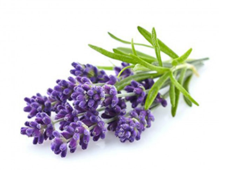
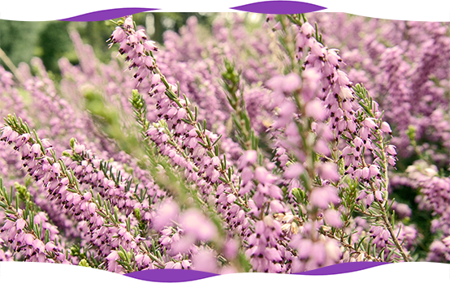
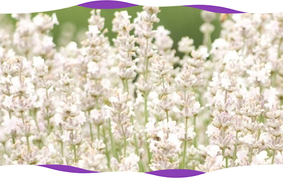

Види лаванди, характеристика та опис.

Лаванда – це багаторічна рослина, вічнозелена, досить невибаглива. Представляє собою кущі діаметром від 40 до 90см, висотою від 50 до 120см. Характеризується насиченим цвітінням блакитного, фіолетового, рожевого або білого кольору звісно все залежить від сорту та виду лаванди. Видів лаванди три, а сортів у світі більше тридцяти. Може вирощуватися на черноземах, піщаних, малопродуктивних та кам’янистих ґрунтах.
Лавандова продукція широко використовується в косметології, медицині. В Україні стрімко набирає обретів засадженням лавандових полів для проведення виїздних церемоній для молодят. У наш час зростає попит на натуральну рослинну сировину та ефірну олію лаванди. Лавандова Мануфактура вирощує власний посадковий матеріал та виробляє натуральну ефірну олію. Територія України придатна за природними умовами для вирощування перспективних ефіроолійних рослин, зокрема, лаванди. У нас в магазині ви можете предбати необіхідну кількість саджанців лаванди, допоможемо та проконсультуємо у всіх етапах посадках.
Широкість та різноманітність сортів лаванди вражає, на даний момент в світі є три види сімейства лаванди. Перший вид найбільш розповсюджений на території Україні це лаванда вузьколиста, вона ж має синонім англійська, лікарська, вона же ангустифолія. Другий вид – це широколистна лаванда вона ж має в народі назву французька, дану лаванду прийнято вирощувати в більш теплих кліматичних зонах таких як Франція, Італія та Іспанія. В Україні широколистну лаванду вирощувати можна, але бажано на зиму заносити рослину в теплицю. Третій вид це Лавандина - гібрид двох видів, отриманий в результаті схрещування лаванди широколистий (L. latifolia) і лаванди вузьколистої (L. angustifolia). Далі більш детально про всі три виду.
І так перший вид і самий топовий – це лаванда вузьколиста. Вона ідеально переносить морозні зими в Україні, укривати не треба. Вона досягає до 1м в висоту та ширину, має невеликі вузькі листочки сіро-зеленого кольору. Кольорова гамма англійської різноманітна : голуба, синя, фіолетова, темно фіолетова, рожева. Для декоративних цілей та створення альпійських доріжок використовують лаванду officinale ми вирощуємо цей сорт з насіння.
Великим ефіроолійним сортом є Хемус - отриманий шляхом індивідуального галузевого відбору. Широко використовується в промисловій посадці для подальшої переробки в олію. Пучки округлі, висотою більше 50 см, з акуратними, близько прямостоячими і здоровими квітучими стеблами з темно-пурпуровими квітками 450-500 в одному кущі. Середньоранніх цвітіння 1-7 липня початок. У Хемуса дуже відмінна вкоріненість.
Інформація стосовно оілйності кульутри Хемус:
- 1 рік з 1 га - 500 кг зеленої маси, яка в свою чергу при переробці дає 5кг лавандової олії.
- 2 рік з 1 га - 1000-2000 кг зеленої маси, яка в свою чергу при переробці дає 20-25кг лавандової олії.
- 3 рік з 1 га - 3000-5000 кг зеленої маи, яка в свою чергу при переробці дає 30-50 кг лавандової олії.
- 4 рік з 1 га - 6000-9000 кг зеленої маси, яка в свою чергу при переробці дає - 60-100 кг лавандової олії.
- 5 рік з 1 га - 10000-13000 кг зеленої маси, яка в свою чергу при переробці дає - 100-150 кг лавандової олії.
- До 10 років з хорошим добривом і сприятливими погодними умовами будеш мати олію стабільно олію по показникам 4-5року.

Лаванда Рожева
Існує безліч гібридів і культурних сортів, які використовуються в комерційних і садових цілях. Цікаво що рожева лаванда має цікаву особливість - в залежності від інтенсивності освітлення рослин протягом доби та куту падіння сонячних променів, стають більш виразними відтінки рожевого або бузкового. Тому у ландшафтному дизайні стилю лаванда garden дивовижне видовище палітри мінливих зефірно ніжних хмар ніколи не наскучить. Лавандова Мануфактура пропонує купити лаванду в Україні районованих сортів - саджанці вузьколистої лаванди Rosea з ніжними суцвіттями бузково-рожевого відтінку і неперевершеним ароматом.

Лаванда Біла
Це - одна з улюблених квітниками сучасних груп культурних різновидів лаванди: варіанті сортів з квітами янгольско-білих відтінків були виведені шляхом селекції гібридів вузьколистої англійської лаванди. Компактні кущики, вирощені з саджанців лаванди, здатні перетворити будь-яку територію на шедевр ландшафтного дизайну «лаванда garden», прикрасити інтер'єр, наповнити його дивним ароматом ефірних олій білих суцвіть. Лавандова Мануфактура дає комфортну можливість реалізувати бажання купити лаванду в Україні, та пропонує найкращі невибагливі морозостійкі сорти білої лаванди.
Розповсюдженими сортами є Munstead (Мюнстед) , Hidcote (Хідкод) але вони не пригоді для вирощування в промислових масштабах, та більш підходять для саду.
Шикарні по своїй формі квіти у широколистної лаванди. Вона в народі отримала назву французька. Квіти у них бувають дуже різні відтінки фіолетового, бузкового, білого та рожевого кольору. В наших широтах можливо вирощувати французьку лаванду в контейнера. Нажаль то наші зими дуже мороостійкі і рослина може у відкритому грунті погинути.
Як відрізнити лаванду від лавандина (гібрид широколистою і вузьколистої лаванди)?
- Кущ лавандина більш габаритний, ніж лаванда
- Лавандин зацвітає пізніше лаванди на місяць
- Масло лавандина містить на 8-12% більше камфори, ніж лаванда, тому запах більш міцний, насичений, чоловічий.
- Квіти у лавандина великі і розташовані більш щільно, верхівка суцвіття гостра, форма конусоподібної.
- Стебель у лавандина високий, жорсткий і прямостоящий. Не потрібно вичікувати дозрівання гілочок, для того, щоб зібрати букет.
- Кущ лавандина більш габаритний, ніж лаванда
- Лавандин зацвітає пізніше лаванди на місяць
- Масло лавандина містить на 8-12% більше камфори, ніж лаванда, тому запах більш міцний, насичений, чоловічий.
- Квіти у лавандина великі і розташовані більш щільно, верхівка суцвіття гостра, форма конусоподібної.
- Стебель у лавандина високий, жорсткий і прямостоящий. Не потрібно вичікувати дозрівання гілочок, для того, щоб зібрати букет.